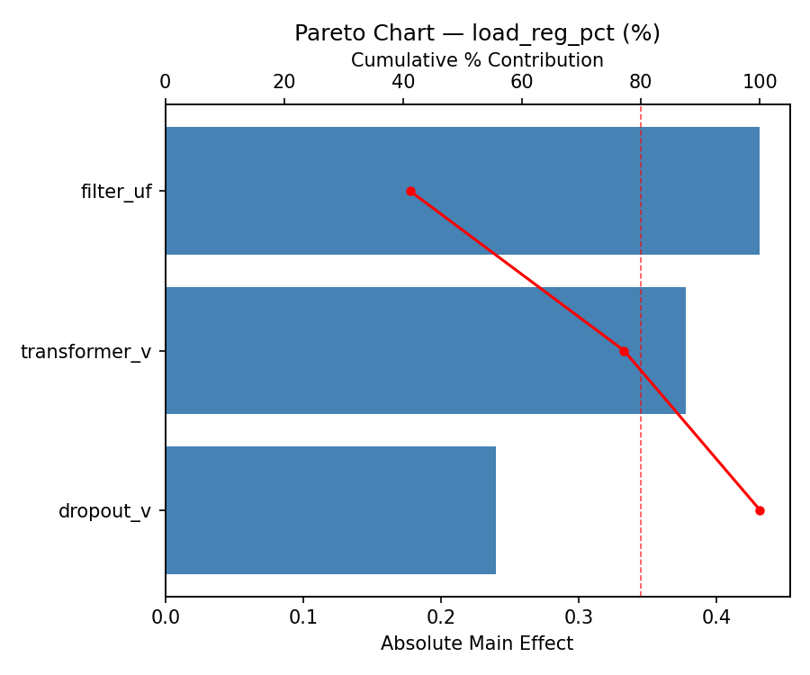
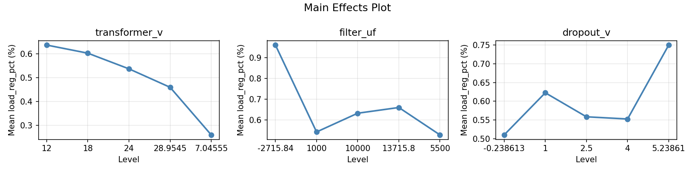
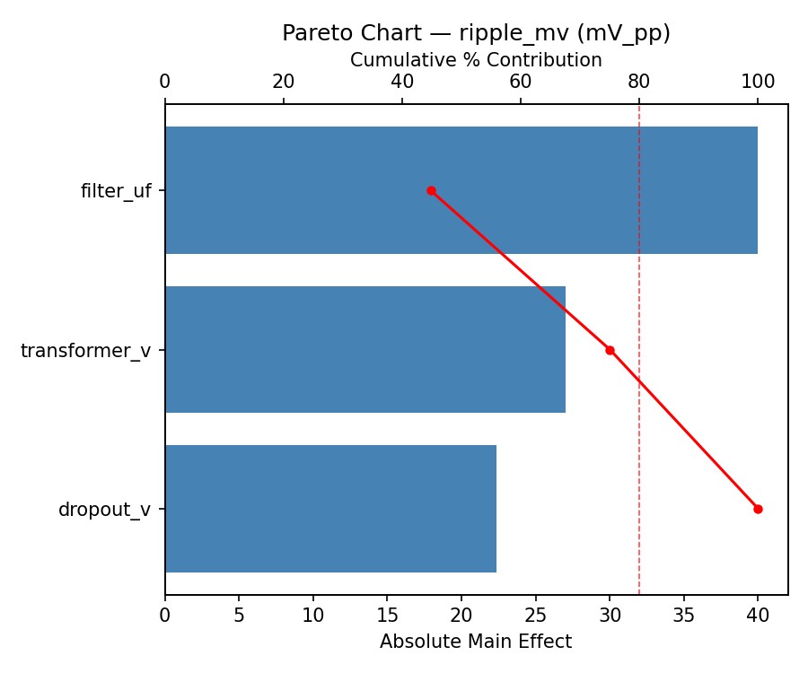
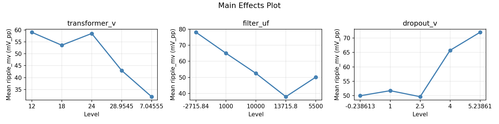
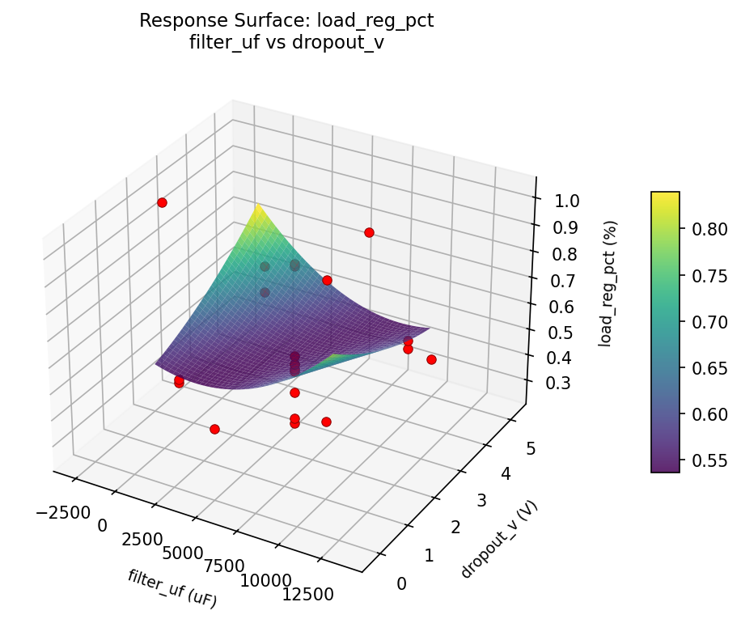
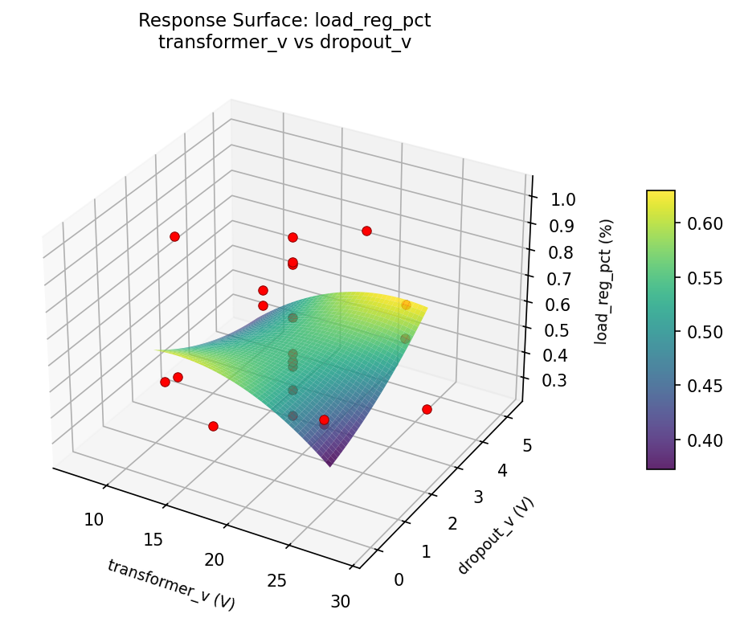
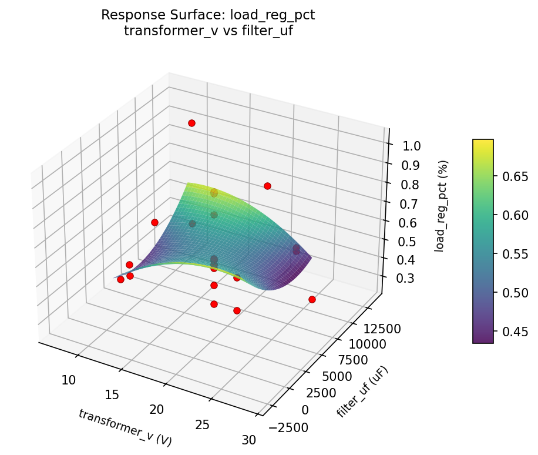
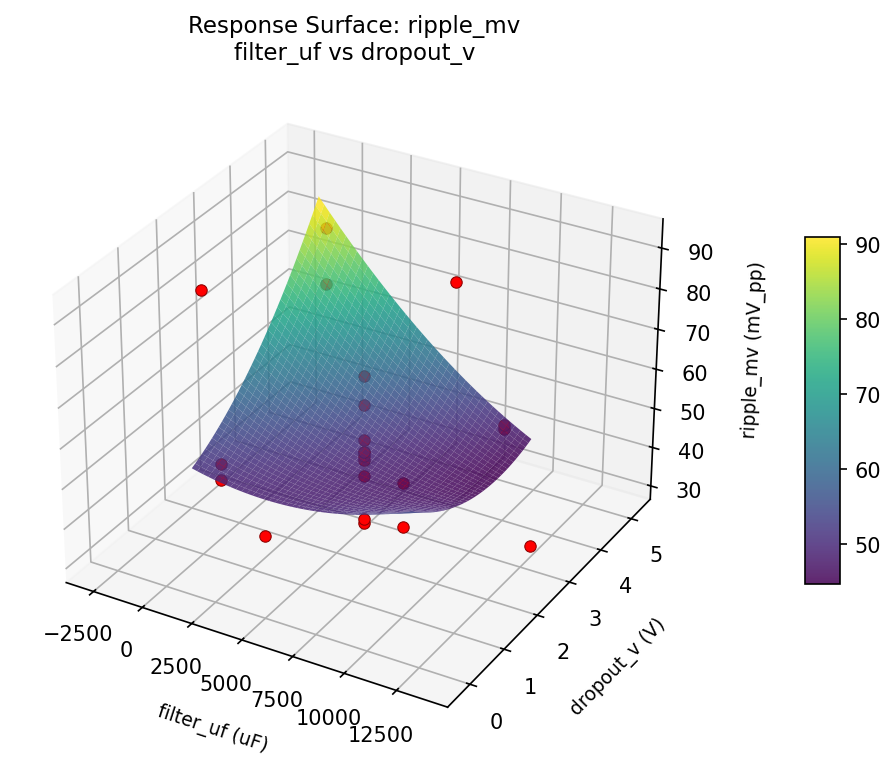
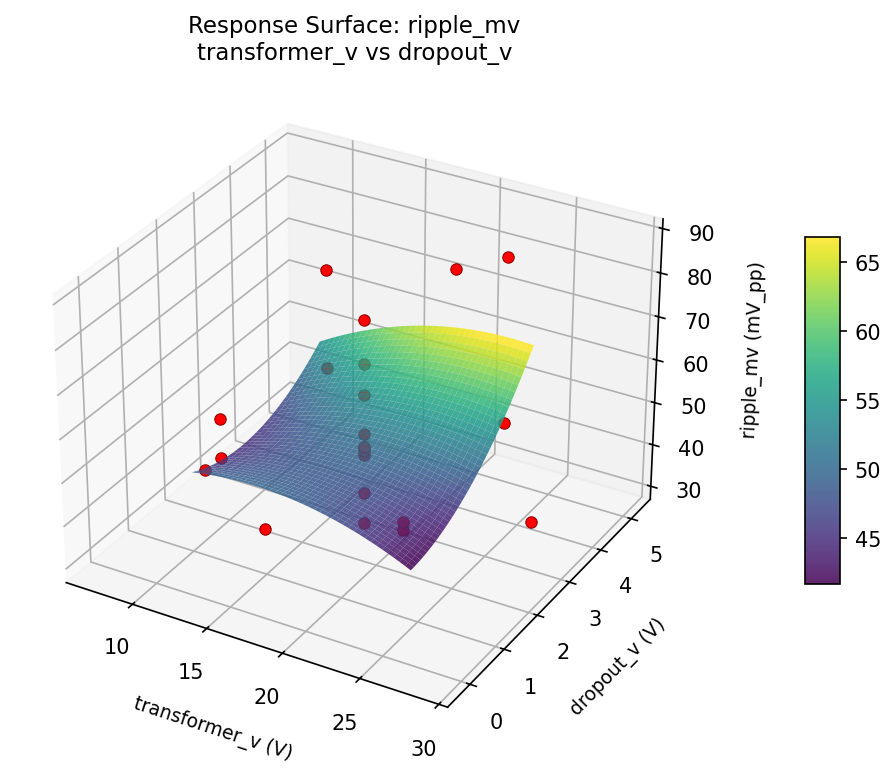
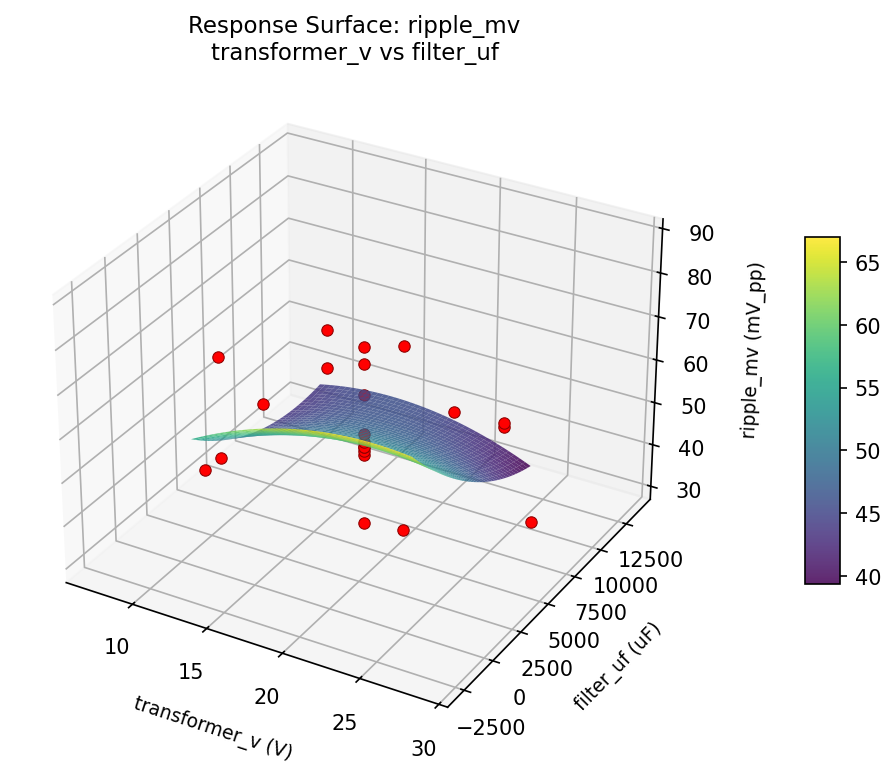

Summary
This experiment investigates linear power supply regulation. Central composite design to maximize load regulation and minimize ripple by tuning transformer tap, filter capacitance, and regulator dropout.
The design varies 3 factors: transformer v (V), ranging from 12 to 24, filter uf (uF), ranging from 1000 to 10000, and dropout v (V), ranging from 1 to 4. The goal is to optimize 2 responses: load reg pct (%) (minimize) and ripple mv (mV_pp) (minimize). Fixed conditions held constant across all runs include regulator = LM317, output = 12V.
A Central Composite Design (CCD) was selected to fit a full quadratic response surface model, including curvature and interaction effects. With 3 factors this produces 22 runs including center points and axial (star) points that extend beyond the factorial range.
Quadratic response surface models were fitted to capture potential curvature and factor interactions. The RSM contour plots below visualize how pairs of factors jointly affect each response.
Key Findings
For load reg pct, the most influential factors were filter uf (41.1%), transformer v (36.0%), dropout v (22.9%). The best observed value was 0.26 (at transformer v = 18, filter uf = 5500, dropout v = 2.5).
For ripple mv, the most influential factors were filter uf (44.8%), transformer v (30.2%), dropout v (25.0%). The best observed value was 31.0 (at transformer v = 18, filter uf = 5500, dropout v = 2.5).
Recommended Next Steps
- Run confirmation experiments at the predicted optimal settings to validate the model.
- Consider whether any fixed factors should be varied in a future study.
Experimental Setup
Factors
| Factor | Low | High | Unit |
|---|
transformer_v | 12 | 24 | V |
filter_uf | 1000 | 10000 | uF |
dropout_v | 1 | 4 | V |
Fixed: regulator = LM317, output = 12V
Responses
| Response | Direction | Unit |
|---|
load_reg_pct | ↓ minimize | % |
ripple_mv | ↓ minimize | mV_pp |
Configuration
{
"metadata": {
"name": "Linear Power Supply Regulation",
"description": "Central composite design to maximize load regulation and minimize ripple by tuning transformer tap, filter capacitance, and regulator dropout"
},
"factors": [
{
"name": "transformer_v",
"levels": [
"12",
"24"
],
"type": "continuous",
"unit": "V"
},
{
"name": "filter_uf",
"levels": [
"1000",
"10000"
],
"type": "continuous",
"unit": "uF"
},
{
"name": "dropout_v",
"levels": [
"1",
"4"
],
"type": "continuous",
"unit": "V"
}
],
"fixed_factors": {
"regulator": "LM317",
"output": "12V"
},
"responses": [
{
"name": "load_reg_pct",
"optimize": "minimize",
"unit": "%"
},
{
"name": "ripple_mv",
"optimize": "minimize",
"unit": "mV_pp"
}
],
"settings": {
"operation": "central_composite",
"test_script": "use_cases/280_power_supply_design/sim.sh"
}
}
Experimental Matrix
The Central Composite Design produces 22 runs. Each row is one experiment with specific factor settings.
| Run | transformer_v | filter_uf | dropout_v |
|---|
| 1 | 18 | 5500 | 2.5 |
| 2 | 24 | 1000 | 4 |
| 3 | 12 | 10000 | 1 |
| 4 | 18 | 13715.8 | 2.5 |
| 5 | 18 | 5500 | 2.5 |
| 6 | 7.04555 | 5500 | 2.5 |
| 7 | 18 | 5500 | -0.238613 |
| 8 | 18 | 5500 | 2.5 |
| 9 | 24 | 10000 | 1 |
| 10 | 28.9545 | 5500 | 2.5 |
| 11 | 18 | 5500 | 2.5 |
| 12 | 18 | -2715.84 | 2.5 |
| 13 | 18 | 5500 | 2.5 |
| 14 | 12 | 1000 | 4 |
| 15 | 18 | 5500 | 2.5 |
| 16 | 24 | 1000 | 1 |
| 17 | 18 | 5500 | 5.23861 |
| 18 | 24 | 10000 | 4 |
| 19 | 18 | 5500 | 2.5 |
| 20 | 12 | 1000 | 1 |
| 21 | 12 | 10000 | 4 |
| 22 | 18 | 5500 | 2.5 |
Step-by-Step Workflow
1
Preview the design
$ python doe.py info --config use_cases/280_power_supply_design/config.json
2
Generate the runner script
$ python doe.py generate --config use_cases/280_power_supply_design/config.json \
--output use_cases/280_power_supply_design/results/run.sh --seed 42
3
Execute the experiments
$ bash use_cases/280_power_supply_design/results/run.sh
4
Analyze results
$ python doe.py analyze --config use_cases/280_power_supply_design/config.json
5
Get optimization recommendations
$ python doe.py optimize --config use_cases/280_power_supply_design/config.json
6
Generate the HTML report
$ python doe.py report --config use_cases/280_power_supply_design/config.json \
--output use_cases/280_power_supply_design/results/report.html
Features Exercised
| Feature | Value |
|---|
| Design type | central_composite |
| Factor types | continuous (all 3) |
| Arg style | double-dash |
| Responses | 2 (load_reg_pct ↓, ripple_mv ↓) |
| Total runs | 22 |
Analysis Results
Generated from actual experiment runs using the DOE Helper Tool.
Response: load_reg_pct
Top factors: filter_uf (41.1%), transformer_v (36.0%), dropout_v (22.9%).
Pareto Chart

Main Effects Plot

Response: ripple_mv
Top factors: filter_uf (44.8%), transformer_v (30.2%), dropout_v (25.0%).
Pareto Chart

Main Effects Plot

Response Surface Plots
3D surfaces fitted with quadratic RSM. Red dots are observed data points.
load reg pct filter uf vs dropout v

load reg pct transformer v vs dropout v

load reg pct transformer v vs filter uf

ripple mv filter uf vs dropout v

ripple mv transformer v vs dropout v

ripple mv transformer v vs filter uf

Full Analysis Output
RSM surface: rsm_load_reg_pct_transformer_v_vs_filter_uf.png
RSM surface: rsm_load_reg_pct_transformer_v_vs_dropout_v.png
RSM surface: rsm_load_reg_pct_filter_uf_vs_dropout_v.png
RSM surface: rsm_ripple_mv_transformer_v_vs_filter_uf.png
RSM surface: rsm_ripple_mv_transformer_v_vs_dropout_v.png
RSM surface: rsm_ripple_mv_filter_uf_vs_dropout_v.png
=== Main Effects: load_reg_pct ===
Factor Effect Std Error % Contribution
--------------------------------------------------------------
filter_uf 0.4317 0.0432 41.1%
transformer_v 0.3775 0.0432 36.0%
dropout_v 0.2400 0.0432 22.9%
=== Summary Statistics: load_reg_pct ===
transformer_v:
Level N Mean Std Min Max
------------------------------------------------------------
12 4 0.6375 0.2566 0.4900 1.0200
18 12 0.6033 0.2137 0.2800 0.9600
24 4 0.5375 0.0768 0.4800 0.6500
28.9545 1 0.4600 0.0000 0.4600 0.4600
7.04555 1 0.2600 0.0000 0.2600 0.2600
filter_uf:
Level N Mean Std Min Max
------------------------------------------------------------
-2715.84 1 0.9600 0.0000 0.9600 0.9600
1000 4 0.5425 0.0780 0.4800 0.6500
10000 4 0.6325 0.2586 0.4900 1.0200
13715.8 1 0.6600 0.0000 0.6600 0.6600
5500 12 0.5283 0.2007 0.2600 0.8700
dropout_v:
Level N Mean Std Min Max
------------------------------------------------------------
-0.238613 1 0.5100 0.0000 0.5100 0.5100
1 4 0.6225 0.2651 0.4800 1.0200
2.5 12 0.5583 0.2309 0.2600 0.9600
4 4 0.5525 0.0695 0.4900 0.6500
5.23861 1 0.7500 0.0000 0.7500 0.7500
=== Main Effects: ripple_mv ===
Factor Effect Std Error % Contribution
--------------------------------------------------------------
filter_uf 40.0000 3.0826 44.8%
transformer_v 27.0000 3.0826 30.2%
dropout_v 22.3333 3.0826 25.0%
=== Summary Statistics: ripple_mv ===
transformer_v:
Level N Mean Std Min Max
------------------------------------------------------------
12 4 59.0000 10.8628 51.0000 74.0000
18 12 53.5833 13.7607 31.0000 78.0000
24 4 58.5000 19.7062 47.0000 88.0000
28.9545 1 43.0000 0.0000 43.0000 43.0000
7.04555 1 32.0000 0.0000 32.0000 32.0000
filter_uf:
Level N Mean Std Min Max
------------------------------------------------------------
-2715.84 1 78.0000 0.0000 78.0000 78.0000
1000 4 65.0000 19.4079 47.0000 88.0000
10000 4 52.5000 5.0662 49.0000 60.0000
13715.8 1 38.0000 0.0000 38.0000 38.0000
5500 12 50.1667 12.3644 31.0000 72.0000
dropout_v:
Level N Mean Std Min Max
------------------------------------------------------------
-0.238613 1 50.0000 0.0000 50.0000 50.0000
1 4 51.7500 5.7373 47.0000 60.0000
2.5 12 49.6667 13.8979 31.0000 78.0000
4 4 65.7500 18.5180 50.0000 88.0000
5.23861 1 72.0000 0.0000 72.0000 72.0000
Pareto chart (load_reg_pct): use_cases/280_power_supply_design/results/analysis/pareto_load_reg_pct.png
Pareto chart (ripple_mv): use_cases/280_power_supply_design/results/analysis/pareto_ripple_mv.png
Main effects (load_reg_pct): use_cases/280_power_supply_design/results/analysis/main_effects_load_reg_pct.png
Main effects (ripple_mv): use_cases/280_power_supply_design/results/analysis/main_effects_ripple_mv.png
Optimization Recommendations
=== Optimization: load_reg_pct ===
Direction: minimize
Best observed run: #9
transformer_v = 18
filter_uf = 5500
dropout_v = 2.5
Value: 0.26
RSM Model (linear, R² = 0.3110, Adj R² = 0.1961):
Coefficients:
intercept +0.5755
transformer_v +0.0416
filter_uf +0.0273
dropout_v -0.1256
RSM Model (quadratic, R² = 0.4589, Adj R² = 0.0531):
Coefficients:
intercept +0.4924
transformer_v +0.0416
filter_uf +0.0273
dropout_v -0.1256
transformer_v*filter_uf -0.0112
transformer_v*dropout_v -0.0412
filter_uf*dropout_v -0.0012
transformer_v^2 +0.0140
filter_uf^2 +0.0530
dropout_v^2 +0.0575
Curvature analysis:
dropout_v coef=+0.0575 negligible curvature
filter_uf coef=+0.0530 negligible curvature
transformer_v coef=+0.0140 negligible curvature
Predicted optimum (from linear model):
transformer_v = 18
filter_uf = 5500
dropout_v = -0.238613
Predicted value: 0.8048
Model quality: Weak fit — consider adding center points or using a different design.
Factor importance:
1. dropout_v (effect: 0.4, contribution: 40.1%)
2. transformer_v (effect: 0.4, contribution: 36.8%)
3. filter_uf (effect: 0.2, contribution: 23.1%)
=== Optimization: ripple_mv ===
Direction: minimize
Best observed run: #4
transformer_v = 18
filter_uf = 5500
dropout_v = 2.5
Value: 31.0
RSM Model (linear, R² = 0.2228, Adj R² = 0.0933):
Coefficients:
intercept +54.0000
transformer_v -0.1302
filter_uf +7.8310
dropout_v -2.3125
RSM Model (quadratic, R² = 0.6867, Adj R² = 0.4517):
Coefficients:
intercept +44.6579
transformer_v -0.1302
filter_uf +7.8311
dropout_v -2.3125
transformer_v*filter_uf +5.7500
transformer_v*dropout_v +3.0000
filter_uf*dropout_v +1.5000
transformer_v^2 +4.5710
filter_uf^2 +8.3211
dropout_v^2 +1.1210
Curvature analysis:
filter_uf coef=+8.3211 convex (has a minimum)
transformer_v coef=+4.5710 convex (has a minimum)
dropout_v coef=+1.1210 convex (has a minimum)
Notable interactions:
transformer_v*filter_uf coef=+5.7500 (synergistic)
transformer_v*dropout_v coef=+3.0000 (synergistic)
filter_uf*dropout_v coef=+1.5000 (synergistic)
Predicted optimum (from quadratic model):
transformer_v = 18
filter_uf = 13715.8
dropout_v = 2.5
Predicted value: 86.6921
Model quality: Moderate fit — use predictions directionally, not precisely.
Factor importance:
1. filter_uf (effect: 42.1, contribution: 46.3%)
2. dropout_v (effect: 31.5, contribution: 34.7%)
3. transformer_v (effect: 17.2, contribution: 19.0%)